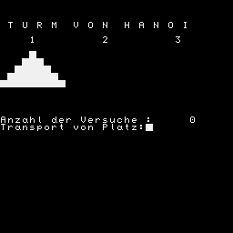

<!DOCTYPE html PUBLIC "-//W3C//DTD XHTML 1.1//EN" "http://www.w3.org/TR/xhtml11/DTD/xhtml11.dtd">
<html xmlns="http://www.w3.org/1999/xhtml"  xml:lang="de">
<head>
  <meta name="viewport" content="width=device-width, initial-scale=1" />
  <link rel="shortcut icon" href="./favicon.ico" type="image/x-icon" />
  <link rel="icon" href="./favicon.ico" type="image/x-icon" />
  <meta name="description" content="Z1013 Software-Datenbank: Liste aller bekannten Dateien" />
  <meta name="keywords" lang="de" content="U880, Z80, Z1013, software, download, datenbank" />
  <meta name="keywords" lang="en" content="U880, Z80, Z1013, software, download, database" />
  <link rel="stylesheet" type="text/css" href="../formate.css" />

<title>Z1013 Software-Datenbank Eintrag</title>
<meta http-equiv="content-type" content="text/html;charset=UTF-8" />
</head>
<body>
<div></div><div class="filelist">1000 17ad ff00 b ... <a href="b.TURM VON HANOI.z80">TURM&nbsp;VON&nbsp;HANOI&nbsp;&nbsp;</a></div>
<pre>10 OUTCHAR 12
50 FOR X=1 TO 30
60 @(X)=0
70 NEXT X
100 FOR X=4 TO 30 STEP 4
110 @(X)=7
120 NEXT X
130 @(1)=1
140 @(5)=2
150 @(9)=3
160 @(13)=4
170 @(17)=5
180 @(21)=6
190 @(22)=7
200 @(23)=7
210 V=0
220 P.;P.;P.
230 P." T U R M  V O N  H A N O I"
240 P.
250 P."    1         2         3"
260 P.
270 FOR X=1 TO 24
290 GOTO(@(X)*10+1000)
300 NEXT X
310 IF @(3)=1 GOTO 760
320 P."Anzahl der Versuche :",V 
330 INPUT"Transport von Platz"A
340 INPUT"         nach Platz"B
350 P.;P.
400 IF (A-1)&gt;2 GOTO 1200
410 IF (B-1)&gt;2 GOTO 1200
430 C=0;D=0;E=0
440 FOR X=1 TO 24 STEP 4
450 IF @(X)&gt;0 GOTO 480
460 NEXT X
470 GOTO 490
480 C=X
490 FOR X=2 TO 24 STEP 4
500 IF @(X)&gt;0 GOTO 530
510 NEXT X
520 GOTO 540
530 D=X
540 FOR X=3 TO 24 STEP 4
550 IF @(X)&gt;0 GOTO 580
560 NEXT X
570 GOTO 590
580 E=X
590 F=C
600 IF A=1 GOTO 640
610 F=D
620 IF A=2 GOTO 640
630 F=E
640 G=C
650 IF B=1 GOTO 690
660 G=D
670 IF B=2 GOTO 690
680 G=E
690 IF @(G)&lt;@(F) GOTO 1200
700 IF G=F GOTO 1200
710 IF @(F)&gt;5 GOTO 1200
715 V=V+1
720 @(G-4)=@(F)
730 @(F)=0
740 GOTO 1080
760 IF V&gt;32 GOTO 800
770 P."Kaum zu glauben Sie haben es"
771 P."mit",V," Versuchen geschafft !"
790 GOTO 900
800 IF V&gt;35 GOTO 840
810 P."Sie haben gut gespielt"
830 GOTO 900
840 IF V&gt;40 GOTO 865
850 P."Etwas mehr ueben !"
860 GOTO 900
865 IF V&gt;50 GOTO 884
870 P."Nerven behalten !"
880 GOTO 900
884 P."Es ist hoffnungslos mit Ihnen !"
900 P.
910 P."Wollen Sie weiterspielen (J/N) "
920 IF (INCHAR)='J' GOTO 10
925 IF (INCHAR)='N' STOP
930 GOTO 920
1000 P."          ",
1005 GOTO 300
1010 P."         ",
1015 GOTO 300
1020 P."       ",
1025 GOTO 300
1030 P."     ",
1035 GOTO 300
1040 P."   ",
1045 GOTO 300
1050 P." ",
1055 GOTO 300
1060 P."          "
1065 GOTO 300
1070 P.
1075 GOTO 300
1080 OUTCHAR 12
1090 GOTO 220
1200 P.;P.
1220 P."F E H L E R"
1240 FOR Y=1 TO 500
1250 NEXT Y
1260 GOTO 320
</pre>
</body>
</html>